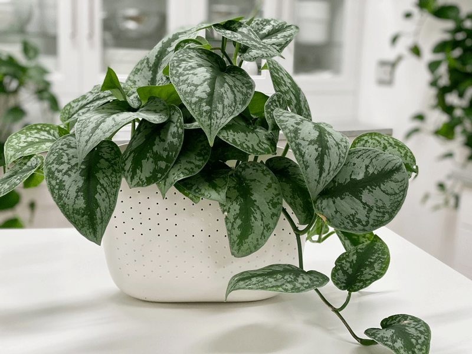
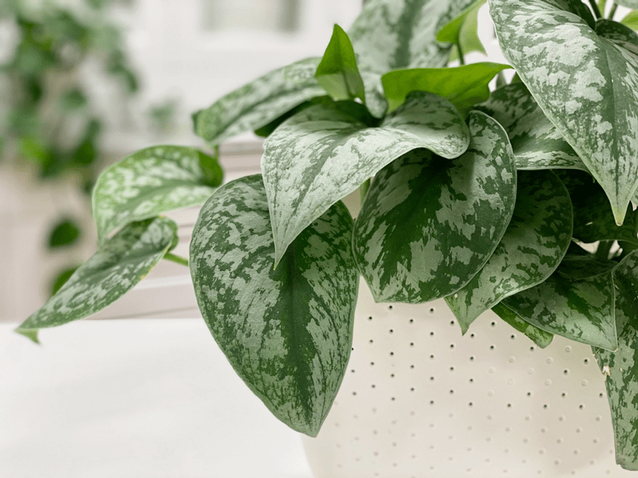
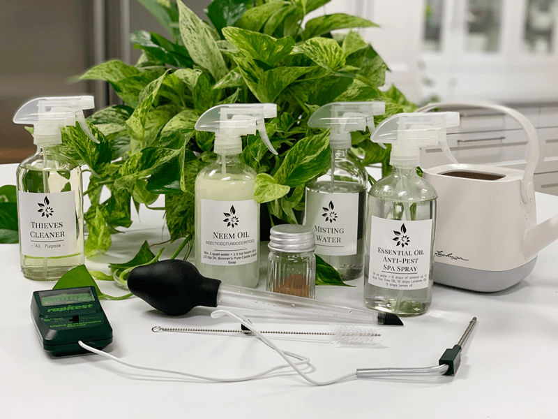
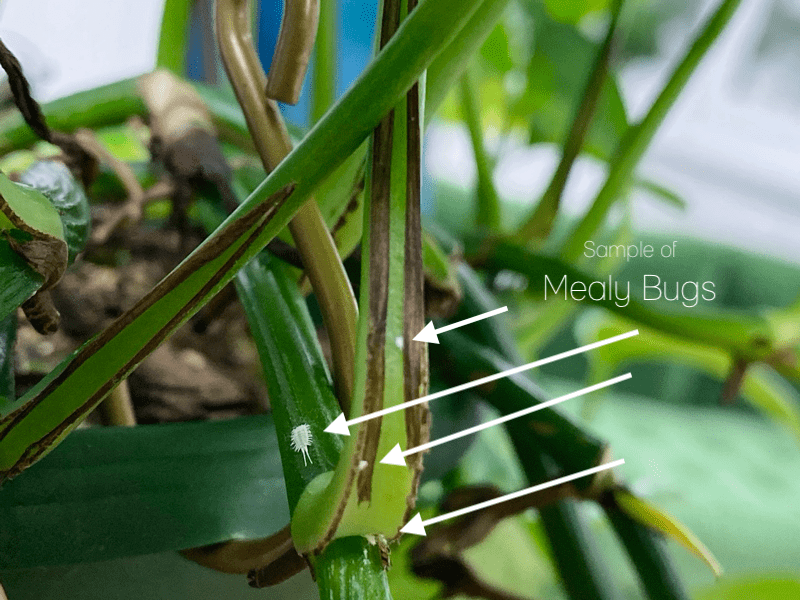
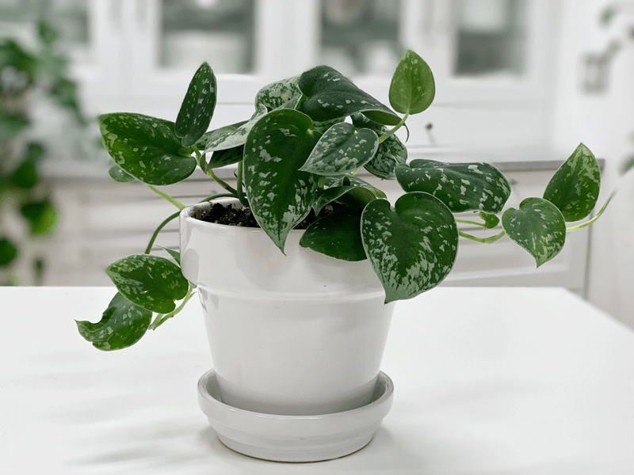
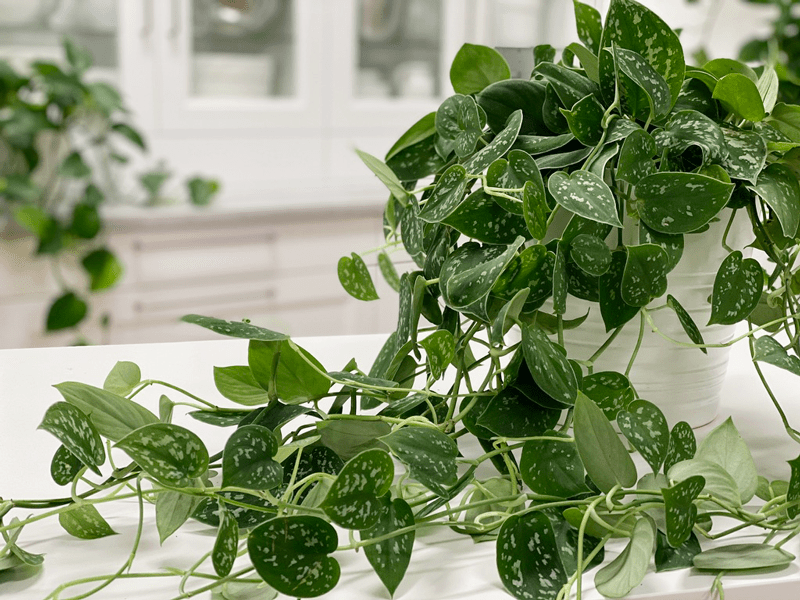

Pothos Plant | Silver Satin | Care Difficulty – Easy
The heart-shaped leaves are embossed with large sections of silver so that no two leaves area like, much like a snowflake. They are velvety to the touch and quite matte in texture. Their vines hang gracefully from a full-bodied plant and can be encouraged to grow as long as you wish. This is an easy-care, low-light-tolerant indoor plant that will quickly work its way into your heart.

You know… I LOVE pothos plants… all of them! But I will admit that I heavily lean towards the Silver Satin. The leaves are thicker, feel very stable, present gorgeous color patterns, and win the award for hardiness and durability. At this very moment, I have seven of these lovely plants, and so far, I haven’t had any issues, bugs, or mishaps. Some seem to grow quicker than others, but I don’t question it. I enjoy their individuality. Ready to dive into the care of these lovely plants? I am!
Light Requirements
The Silver Satin pothos likes bright, indirect light year-round. Harsh, direct sunlight will scorch the leaves, while too little light will cause the leaves to lose their variegation. What does indirect light mean? For outdoor plants, indirect sunlight is caused by such things as clouds covering the sun, or leaves from trees above the plant breaking up the full strength of the sunshine. For indoor plants, indirect sunlight is the weak sunlight that reaches a potted plant placed at least 3 feet away from a sunny window.

Water Requirements
These lovely plants perform best when they are watered regularly and when you allow the soil to dry somewhat between waterings. Don’t worry if you forget—it will occasionally tolerate a missed watering! BUT I don’t recommend doing this too often, as it might stress the plant.
Water them once every week or two, depending on the season. I find that my plants require less watering during the winter months, since most indoor plants go dormant. Of course, this all depends on where you live. Here in Oregon, we experience four seasons. It’s also good to note that smaller potted plants will require more watering, since there isn’t much soil to hold moisture.
Personally, I let my pothos plants dry out to about 75% in between waterings. When I do water them, I take them to the sink and soak them all the way through until water runs out of the base of the pot.

Additional Care
- Remove any dead, discolored, damaged, or diseased leaves and stems as they occur with clean, sharp scissors. Snip the stems just above a leaf node; new growth will emerge from this cut. I do this every time I water my pothos. I use the watering time to inspect my plants thoroughly.
- Clean the leaves often enough to keep dust off of them. You can wipe the plant down regularly with rubbing alcohol to deter insects from the plant. However, do not use a feather duster on your plants, as this is a great way to spread pests.
Optimum Temperature
They prefer average to warm temperatures of 65-85 degrees. Do not expose to temperatures below 65 degrees even for a short time, because cold air will damage the foliage. Avoid cold drafts and heat vents.
Fertilizer – Plant Food
Feed monthly in the spring through fall with general-purpose indoor plant fertilizer. How often a person needs to feed their plants seems to be all over the board, so find the right rhythm that works best for your plants. If you overfeed your plants, they will surely let you know. Here are a few things to watch for:
- Yellowing or browning leaves.
- The top surface of the soil may be white or crusty.
- The leaves of the plant will start dropping off.
- The roots can begin to rot.
If you overfeed a plant and catch it in time, you might be able to save it. One approach is to remove the houseplant from its current soil and repot it in fresh soil. This technique is undoubtedly the best way to get rid of the excess nutrients affecting your plant. Alternatively, you can flush the soil, which involves drenching the soil with water and letting it drain out. Repeat this several times to help the soil get rid of excess fertilizer.
Common Bugs to Watch For
If you want to have healthy houseplants, you MUST inspect them regularly. Every time I water a plant, I give it a quick look-over. Bugs/insects feeding on your plants reduces the plant sap and redirects nutrients from leaves. Some chew on the leaves, leaving holes behind them. Also watch for wilting or yellowing, distorted, or speckled leaves. They can quickly get out of hand and spread to your other plants.
IF you see ONE bug, trust me, there are more. So, take action right away. Some are brave enough to show their “faces” by hanging out on stems in plain sight. Others tend to hide out in the darnedest of places, like the crotch of a plant or in a leaf that has yet to unfurl.

- Mealybugs look like small balls of cotton. They can travel, slooooooowly, but they have a strong will and determination! Though they are slow-moving, if any plant is touching another, there is a chance the mealybug will hitch a ride on a new leaf and spread. They breed like rabbits of the insect world. Females can deposit around 600 eggs in loose cottony masses, often on the underside of leaves or along stems.
- Scales are dark-colored bumps that are primarily immobile insects that stick themselves to stems and leaves. They are rather inconspicuous and don’t look like a typical insect. They can range in color but are most often brownish in appearance. They’re called “scales” primarily due to their scale-like appearance on a plant, due to waxy or armored coverings. They are often seen in clumps along a stem, sucking away at the plant’s juices with their spiky mouthpart.
- Aphids are more commonly seen if you place your plants outdoors. Aphids are indeed bugs. They are tiny insects that, along with black, also come in shades of yellow, green, brown, and pink. They are often found on the undersides of leaves.
- Spider mites are more common on houseplants. They are not insects–they are related to spiders. These appear to be tiny black or red moving dots. Spider mites are nearly invisible to the naked eye. You often need a magnifying lens to spot them, or you may just notice a reddish film across the bottom of the leaves, some webbing, or even some leaf damage, which usually results in reddish-brown spots on the leaf.

Plant Characteristics to Watch For
Diagnosing what is going wrong with your plant is going to take a little detective work, but even more patience! First of all, don’t panic and don’t throw a plant out prematurely. Take a few deep breaths and work down the list of possible issues. Below, I am going to share some typical symptoms that can arise.
When I start to spot troubling signs on a plant, I take the plant into a room with good lighting, pull out my magnifiers, and start by thoroughly inspecting the plant.
Curling Leaves
- Room Temperature – The foliage will start to curl down at the tips if temperatures aren’t in the range of 65-85 ºF (18-29°C). If the temperature falls outside of this range, it will put more stress on your plant and hinder its growth.
- Watering – If underwatered, the leaves can start to curl, then become limp and wilted. The leaves often perk up quickly after watering.
- If only the leaf tips are curling down, I recommend to take your plant out of its pot and investigate its roots. Sometimes, curling leaves can be a sign of root rot. Healthy roots are white. Use a pruner or scissors to remove all the brown-hued, rotting roots. Once you have snipped off all the rotting roots, wash your tools and replant your pothos in fresh soil.
- Downward curling from the tips of the leaves can be a sign of overfeeding (fertilizer). The leaves are also generally smaller than usual and have changed color.
- If the leaves are drooping and curling away from the light (downward), the plant could be getting too much light.
- Insect infestation damage and disease can also cause a pothos to develop curled leaves.
Brown Leaf Tips
- Brown leaf tips may indicate the air is too dry, and more humidity is required.
- The bathroom or kitchen would be an excellent choice for your Silver Satin, because it does best in a slightly more humid environment.
- If needed, you can add a room humidifier to your space.
Yellow or Brown Leaves
- Yellow or brown leaves can be caused by overfeeding (fertilizer).
- Yellow leaves can also be a symptom of too much water.
Brown Spots Surrounded by Yellow Halos
- Brown spots surrounded by yellow halos indicate a bacterial leaf spot. Cut off affected leaves. Take care not to get the leaves wet when watering.
Small Stunted Leaves
- Small stunted leaves can be a sign of underwatering.

Pruning Tip for a Fuller Plant
Your plant will benefit from occasional pruning, which helps it to branch out and become fuller. Spring is the best time to cut it back. If you live in a climate that is warm year-round, you can prune as needed. Use sharp pruners to avoid tearing the stems. I love the idea of pruning (cutting back vines), but I’ll be darned if I don’t tremble when holding the scissors! The payoff is rewarding (in time), but it feels like I am cutting my own hair, which took too long to grow out. Are you feeling me?
Toxicity
Pothos are mildly toxic to pets and humans. This plant is TOXIC if ingested. It can cause a mild irritation to the mouth if chewed or swallowed and also a mild digestive reaction. It may also cause skin irritation. Keep the plant out of reach from animals and kiddos.
© AmieSue.com